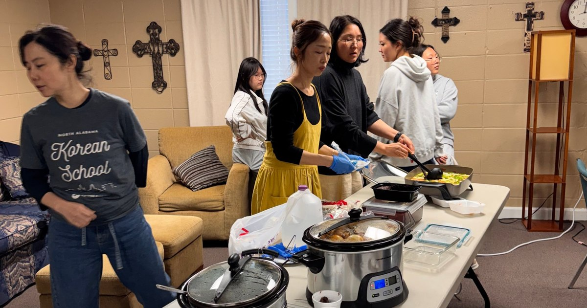
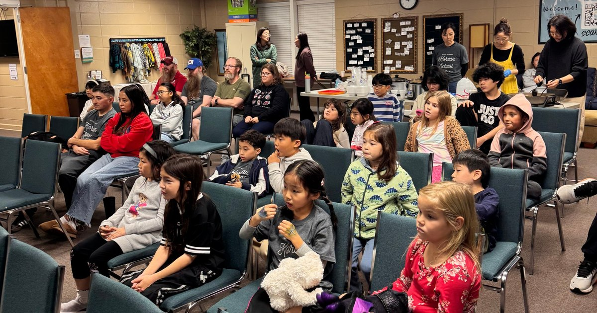

On Saturday, November 7, the North Alabama Korean School devoted a special class to one of the best-loved foods in Korea: tteokbokki. Led by Vice-Principal Lee Owen, students learned where the dish came from and how it came by its flavour — and then ate a bowl of it, cooked on the spot.
Tteokbokki is the dish students are most likely to meet in a Korean snack shop or at a street stall, but the story of how it arrived at the taste they know is far less familiar. The class was arranged to look at how Korean food culture has changed, through one dish everybody already recognises.
From the court's soy sauce to the street's gochujang
The lesson set two pictures side by side. On one side was royal tteokbokki — a dish made with soy sauce, beef and mushrooms, and served to the elite. On the other was the tteokbokki of today, with the heat of gochujang and the inexpensive fish cakes anyone can buy. Students compared the two and saw how far a single name had travelled: the ingredients, the colour, and who got to eat it.

The red, gochujang-based version spread from Seoul's street stalls in the middle of the twentieth century and settled into the form eaten today. A dish once set on a royal table had become something anyone could buy for pocket change — a change held, as it turns out, in a single bowl.
Made on the spot, tasted on the spot
Once the lesson ended, the cooking began in the next room. Teachers worked an electric pan, adding rice cakes, fish cakes and spring onions and stirring the gochujang sauce through, while slow cookers along the table kept what had been prepared earlier hot. The smell carried back into the room where the students were sitting.

The finished tteokbokki was portioned out and carried to the students. Younger students meeting the heat of gochujang for the first time took a bite at a time and compared notes, and a food they had met in words and pictures became one they had actually tasted.

Open to every class
The day was not limited to one grade. Every class was invited, and all of the teachers took part in running it. Students and families filled the room together, sharing the same dish and confirming by taste what they had just learned in the lesson.

Food is often the easiest way for a country's history to reach someone. We hope that learning the change held in a bowl of tteokbokki — and tasting it the same morning — brings the students that much closer to Korean culture.
The North Alabama Korean School will go on creating occasions where students learn Korean language and Korean culture not only inside the classroom, but by seeing, making and tasting it for themselves.